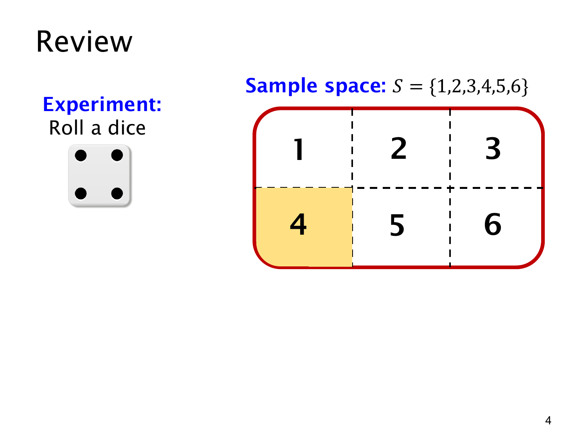

L1.9 · 第 4 页讲解原文
查看这一页课件

把单个结果写成事件
黄色格标出的是点数 4，对应事件 E={4}。外面的红框仍是完整的样本空间
S={1,2,3,4,5,6}.
4 是一个结果，{4} 是包含这个结果的集合，称为单点事件（singleton event）。事件要写成集合，才能表达它是样本空间的子集。
公平骰子的六个结果等可能，黄色格含一个样本点，所以
p(E)=∣S∣∣E∣=61.
图上的颜色帮助我们认出集合，概率计算数的是样本点，并不量黄色格的面积。
掷出 4 时，E 发生；掷出 1、2、3、5、6 时，E 不发生。观察到点数以后，事先建立的样本空间依然保留六个可能结果。